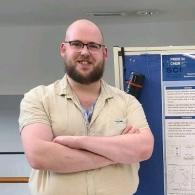
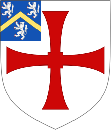
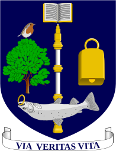
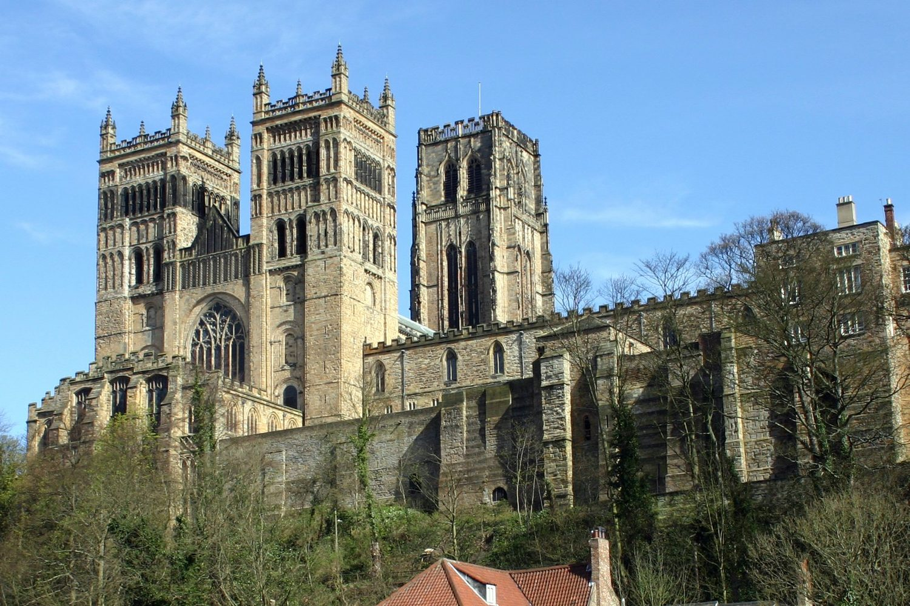

Stuart Cameron Smith
PhD · MSci · MRSC · AFHEA. Durham University

Trainee patent attorney positions and graduate schemes for 2027 entry, in chemistry and life-sciences practice groups. Referees and a writing sample on request.
I am a postdoctoral chemist in the Franchino group at Durham University, working on gold catalysis and data-driven stereoselective methodology. Before Durham I read for a PhD at York on Csp²–Csp³ Suzuki–Miyaura cross-coupling, supervised by Ian Fairlamb and Peter O’Brien, with an industrial CASE placement at AstraZeneca.
Patent law found me through that industrial work. Sitting in project meetings at GSK and AstraZeneca where patentability and freedom-to-operate quietly decided which chemistry we pursued, I found I was more interested in those questions than in the synthesis they governed. I have since taken the World Intellectual Property Organization’s certifications in IP fundamentals (DL-101), patent law (DL-170) and advanced patents (DL-177), and trained as a peer reviewer with the American Chemical Society.
The habits the profession runs on, reading a document precisely, writing so that a claim means one thing and not another, and getting up to speed on unfamiliar technology quickly, are the ones a laboratory has been teaching me since 2016.
Publications
Peer-reviewed output, linked to the version of record. Figures are reproduced from the open-access papers under their Creative Commons licences, credited beneath each one.
-
Automated approaches, reaction parameterisation, and data science in organometallic chemistry and catalysis: towards improving synthetic chemistry and accelerating mechanistic understanding
Digital Discovery, 2024, 3, 1467–1495
-
Data-Led Suzuki-Miyaura Reaction Optimization: Development of a Short Course for Postgraduate Synthetic Chemists
Journal of Chemical Education, 2025, 102, 697–703
-
Practical atmospheric photochemical kinetics for undergraduate teaching and research
RSC Sustainability, 2025, 3, 5146–5154
-
Redox-Active Palladium Ligands
In press
Three further first-author manuscripts from my PhD are in advanced preparation, on pre-transmetalation intermediates, on the synthetic development and mechanism of Csp²–Csp³ Suzuki–Miyaura cross-couplings, and on the synthesis and applications of highly fluorinated alkylphosphines in catalysis. From the postdoc, a first-author manuscript on multivariate regression and machine-learning classification of gold-catalysed cyclisations is in preparation, with a second on exo and endo selectivity in the gold-catalysed cyclisation of 1,6-enynes at an advanced stage. Drafts available on request.
Research
Positions held, most recent first.



-
Jun 2025 to present
Postdoctoral Research Associate, Franchino Group
Durham University · supervised by Dr Allegra Franchino and Dr Jolene Reid
Chlorocat: unlocking metal–chloride bonds for data-driven stereoselective catalysis. I design and run gold-catalysed reaction development using high-throughput and automated methods, and build the computational and machine-learning pipelines that classify catalytic mechanism and predict reactivity from chemical descriptors. I designed, developed and co-led delivery of the department’s high-throughput synthetic screening platform, and opened new collaborations with Professors Justin Perry and Matt Unthank at Northumbria University. I supervise undergraduate and postgraduate researchers and contribute to grant applications.
-
May to Jun 2026
Visiting Postdoctoral Researcher, Reid Group
University of British Columbia, Canada · funded by an RSC International Collaboration Grant
Developed multivariate regression and machine-learning descriptor methods to classify mechanism in gold-catalysed systems, and produced the structured datasets and manuscript drafts arising from the collaboration.
-
Feb to May 2025
Visiting Postdoctoral Researcher, McIndoe Group
University of Victoria, Canada · supervised by Prof. Scott McIndoe
In-situ catalytic reaction monitoring using sulfonated ligands as handles for mass spectrometry. Built real-time electrospray ionisation mass spectrometry workflows that give mechanistic information conventional methods cannot reach.
-
Nov 2024 to Jan 2025
Freelance Consultant, AI for chemistry
Outlier AI
Trained and evaluated generative models for chemical applications, curated and annotated the datasets those workflows ran on, and assessed model output for chemical validity and practical usability.
-
Oct 2023 to Feb 2024
Postgraduate CASE Researcher, Early Chemical Development
AstraZeneca · supervised by Mr Andrew Turner
High-throughput reaction development for Csp²–Csp³ Suzuki–Miyaura cross-couplings of oxocyclic boronates. Designed and ran Design-of-Experiments screening campaigns, including parallelised high-pressure hydrogenation and flow lithiation, to build statistically rigorous models of the relevant chemical space. This is where I first sat in on patentability discussions, and where the shift towards IP started.
-
Jun 2019 to Jul 2020
Undergraduate CASE Researcher, Process Development
GSK · supervised by Dr Stephen Street-Howard and Dr Andrew Jamieson
Process-scale implementation of a novel integrase strand transfer inhibitor. Supported process-scale synthetic development, and took part in discussions on how the chemistry would be protected and commercialised.
-
Apr 2017 to Aug 2021
Undergraduate Researcher
University of Glasgow and industrial partners
Four competitive research placements of three and a half months each, spanning automated synthesis, total synthesis, catalytic methodology, computational chemistry, mathematical modelling and molecular genetics, including a product-development collaboration with DeepMatter.

Teaching
I am an Associate Fellow of the Higher Education Academy. Teaching has not been a sideline of the research: two of my peer-reviewed papers came directly out of courses I designed and ran, which is the part of the record I am most pleased with.
- Tutorial Fellow, Durham University, in organic chemistry and catalysis.
- Graduate Teaching and Marking Assistant, University of York.
- Designed and delivered a postgraduate short course on Design-of-Experiments and automation-enabled reaction optimisation, published in the Journal of Chemical Education.
- Developed advanced workshops on statistical methods and automation-enabled reaction optimisation for PhD and MSc researchers, with a focus on practical adoption and reproducibility.
- Laboratory mentor to five MChem, one BSc and three PhD researchers, and organiser of synthesis and retrosynthesis training sessions for postgraduates at York.
- President, Postgraduate Chemistry Society, University of York, 2022 to 2024. Elected and appointed roles on the Graduate School Board and on equality, diversity and inclusion committees, 2021 to 2024.
- I take a small number of GCSE and A-level chemistry students each year. Enhanced DBS certified.
Writing
Commissioned pieces for the Royal Society of Chemistry, and shorter notes of my own on chemistry, pharmaceutical development and patent practice.
-
14 May 2026
The current academic system doesn’t incentivise risk-taking
But playing it safe can have negative consequences for a field.
Chemistry World · RSC
Record
| PhD in Chemistry, University of York | Synthetic development and mechanistic understanding of Csp²–Csp³ Suzuki–Miyaura cross-couplings. Fairlamb and O’Brien groups | 2021–2025 |
|---|---|---|
| MSci Chemistry with Medicinal Chemistry, University of Glasgow | First Class. Automated synthesis platforms for medicinal lead–target library generation. Cronin group | 2016–2021 |
| RSC International Collaboration Grant | £5,000, competitive national funding for a research visit to Canada | 2026 |
|---|---|---|
| Vice-Chancellor’s Award for Postgraduate Research | University of York | 2024 |
| York Learning and Teaching Award | Excellence in Pedagogical Practice | 2024 |
| Roger J. Mawby Prize for Practical Teaching | University of York | 2023 |
| Prosper Postdoctoral Career Development Programme | Durham University, recognising leadership potential and cross-sector impact | 2025 |
| Carnegie Trust Scholar | £2,000, University of Glasgow | 2017 |
| WIPO Academy | IP Fundamentals (DL-101), Patent Law (DL-170), Advanced Patents (DL-177) | 2025–2026 |
|---|---|---|
| Exercising Leadership | Harvard Online | 2026 |
| Peer Reviewer Training | American Chemical Society | 2026 |
| Forward Business Leadership Program | McKinsey & Company | 2025 |
| Advanced Organometallics | The Scripps Research Institute | 2025 |
| PCEP Certified Python Programmer | Python Institute | 2025 |
| Programming for Artificial Intelligence | Open University | 2025 |
| Winter School on Computational Chemistry | CECAM | 2025 |
| Digital Molecular Technologies Summer School | University of Cambridge | 2024 |
| Reson8 Advanced NMR Training | University of Leeds | 2024 |
| Mastering Medicinal Chemistry VIII | Royal Society of Chemistry, Burlington House | 2024 |
| Member of the Royal Society of Chemistry | MRSC | 2024 |
| Associate Fellow of the Higher Education Academy | AFHEA | 2023 |
More than twenty research presentations at national and international conferences. Highlights include Dalton at the University of Warwick (April 2023), the European Automated Synthesis Forum at Novartis in Basel (November 2023), the AstraZeneca PT&D Review (April 2024), the CheM62 Symposium (June 2024), the Oxford Synthesis Summer Conference (July 2024) and ACS Catalysis for Organic Synthesis in Vienna (August 2024).
Contact
Email is quickest. If you are a firm and want a CV, referees or a writing sample, say so and I will send them.